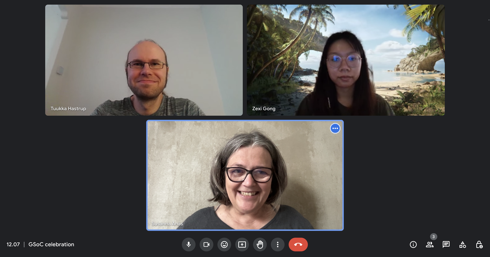
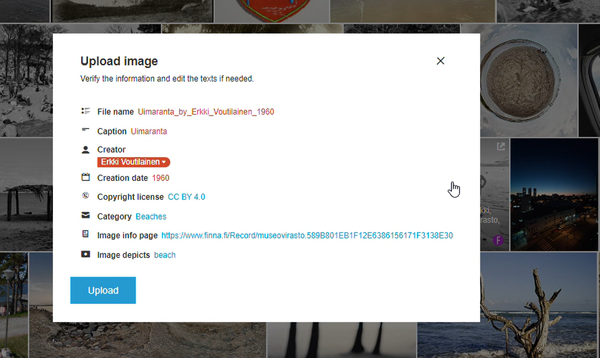
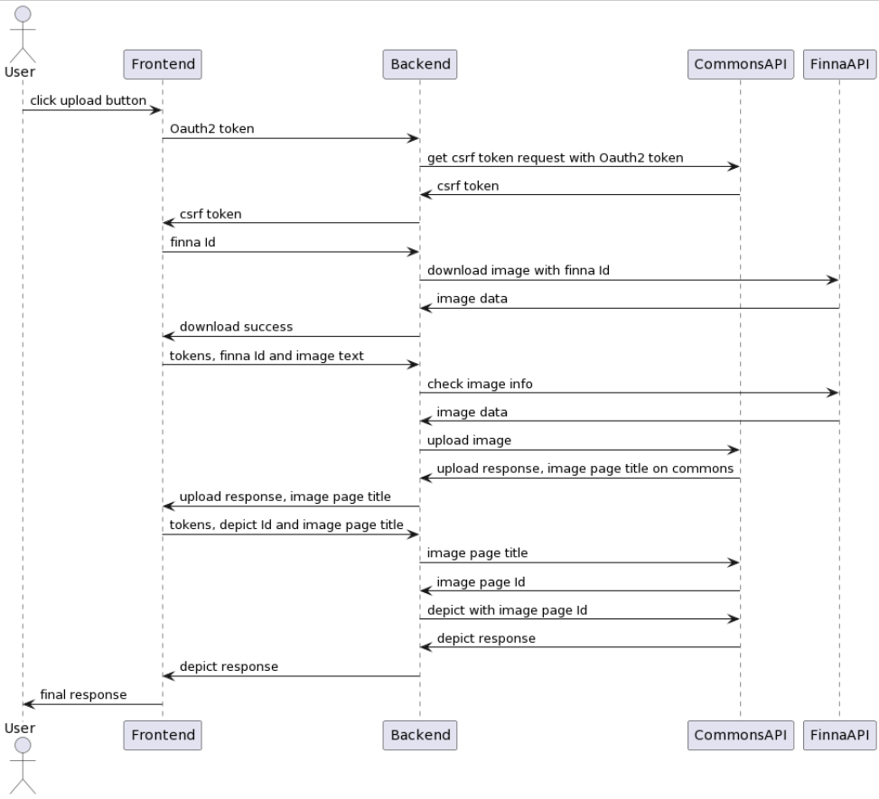

Professional Experience
Google Summer of Code 2023 participant
Remote,US | 05/2023-09/2023
- Pioneered the development of a media files upload system for Wikimedia Foundation, an open-source project.
- Constructed RESTful API scripts using JavaScript and Node.js at the backend, ensuring efficient fetching of media repositories and user authentication data, optimizing the data flow for Wikidocumentaries.
- Crafted an intuitive media upload UI and categorized uploaded media files using HTML/CSS, JavaScript and Vue.
- For More - Link to Wikimedia Newsletter



Data Management Intern, Huatai Securities
Remote,CN | 08/2021-11/2021
- Extracted and filtered market data for banking sector with terminal and converted it into csv.
- Performed data cleaning to filter out abnormal samples and identified the necessary indicators for model building; created and presented data analysis reports.
- Built and implemented an enhanced risk calculation formula, ensuring data stream accessibility and reliability for credit analysis and management system.